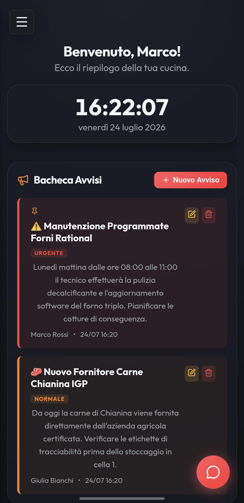
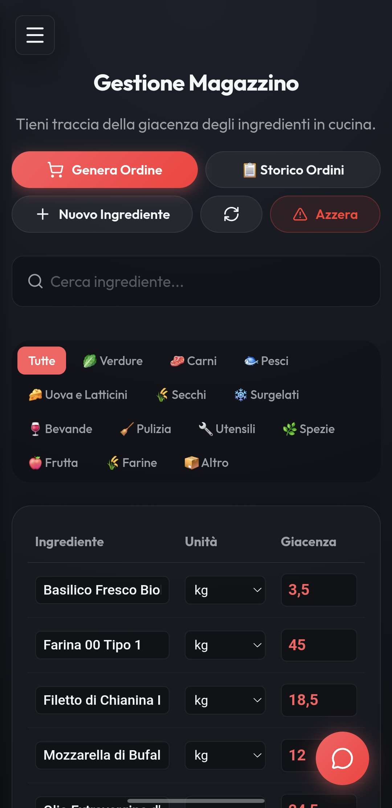
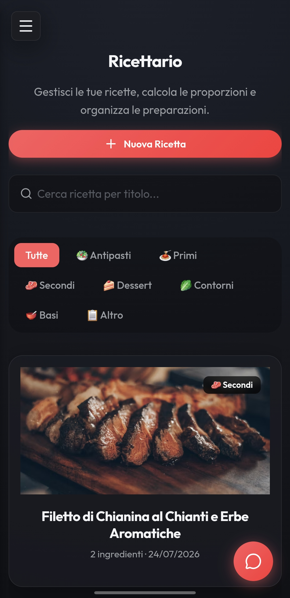
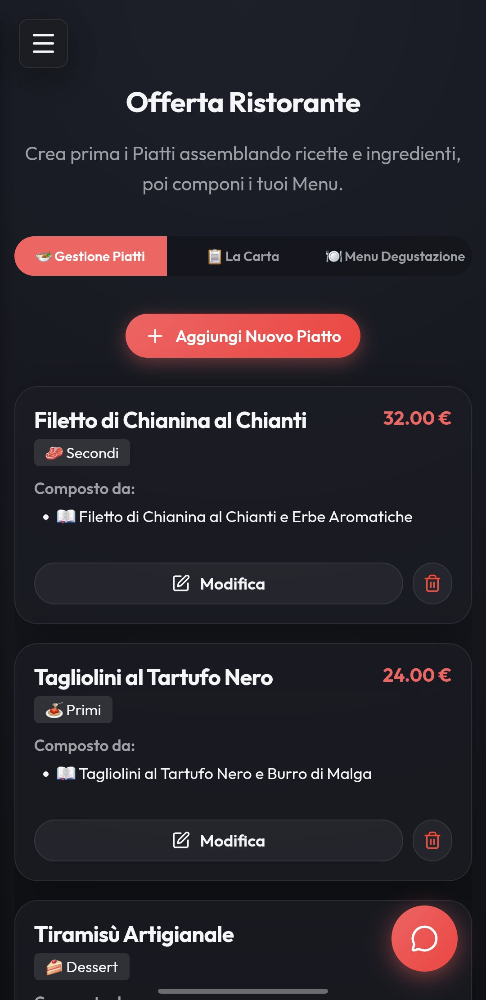
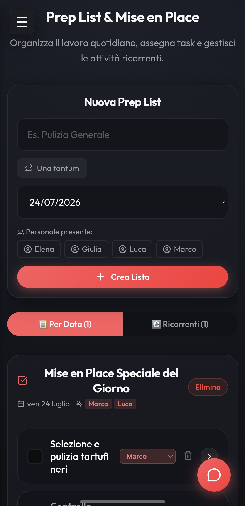
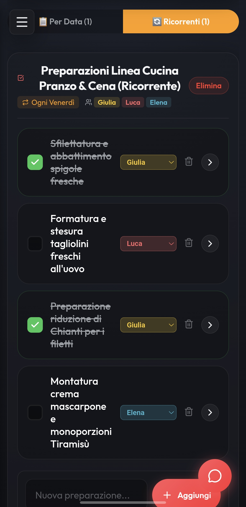

Gestione professionale per la tua Cucina & Brigata.
Una Web App reattiva ed elegante progettata per semplificare l'inventario in tempo reale, la gestione del ricettario, le liste di preparazione (Prep-List) ed i menu degustazione. Installabile come PWA su qualsiasi dispositivo.
✨ Funzionalità Principali
Tutto ciò di cui la tua cucina ha bisogno in un'unica piattaforma integrata.
Magazzino & Inventario
Tracciamento delle giacenze in tempo reale, avvisi di sottoscorta, unita di misura ed una griglia ottimizzata appositamente per la lettura su smartphone e tablet da cucina.
Ricettario & Dosaggi
Schede tecniche dettagliate per ogni piatto con procedurali, grammature precise e foto in alta definizione.
Carte & Menu Degustazione
Organizza i menu del ristorante, inclusi i percorsi Degustazione con associazioni dirette ai piatti del ricettario.
Prep-List & Mise en Place
Organizza il lavoro della brigata suddiviso per data o linea di servizio. Form di aggiunta rapido e spunta visiva in tempo reale.
Eventi & Prenotazioni
Pianifica banchetti e serate speciali collegando direttamente la spesa ed i task di preparazione agli eventi in programma.
PWA & Chat di Brigata
Installa l'app direttamente sulla Home di iOS, Android o Desktop. Comunica velocemente con il personale grazie alla chat integrata.
📸 Panoramica dell'Interfaccia
Design curato nei minimi dettagli per un'esperienza d'uso fluida ed immediata.

Dashboard Principale
Panoramica completa con accesso rapido alle funzioni chiave ed allo stato del giorno.

Magazzino & Scorte
Elenco prodotti reattivo con colonne ottimizzate per lo schermo del cellulare.

Ricettario Digitale
Schede ricetta complete con immagini ad alta risoluzione e dosaggi.

Carte & Menu Degustazione
Gestione del menu ristorante e percorsi di degustazione.

Prep List & Organizzazione
Liste di preparazione giornaliere per mantenere la brigata sempre sincronizzata.

Mise en Place
Organizzazione della linea di servizio ed avanzamento delle attività.
🚀 Avvio Rapido con Docker
Pronto per l'uso su server casalinghi, VPS o Raspberry Pi.
Esegui semplicemente il deployment tramite Docker Compose:
# Clonazione del repository
git clone https://github.com/giosci1994/kitchen-app.git
cd kitchen-app
# Avvio del container
docker compose up -d --build
# Inizializzazione Database & Demo Data (Opzionale)
docker compose exec app npx prisma migrate deploy
docker compose exec app node scripts/seed-demo.js